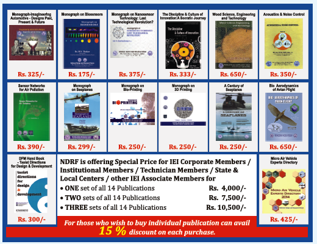

NDRF PUBLICATIONS
LIST OF NDRF PUBLICATIONS
NDRF brings out Monographs and Publications on futuristic engineering technologies:
- 1. R & D Management
- 2. Monograph on Tribology for Design Engineers
- 3. Monograph-Imagineering Automotive, Design, Past, Present & Future
- 4. Monograph on Nanosensor Technology: Last Technological Revolution?
- 5. The Discipline & Culture of Innovation: a Socratic Journey
- 6. Acoustic & Noise Control
- 7. Monograph on Biosensors
- 8. Sensor Networks for Air Pollution
- 9. Wood Science, Engineering and Technology
- 10. Monograph on Seaplanes
- 11. A Century of Seaplanes
- 12. DFM Hand book Taoist Directions for Design & Development
- 13. Micro Air Vehicle Experts Directory
- 14. Monograph on “3D Printing”
- 15. Monograph on ‘Bio-Printing”
- 16. Book on “Bio-Aerodynamics of Avian Flight”
- 17. Monograph on “Micro Air Vehicles”
- 18. Book on “Space and Satellites”
- 19. Harnessing Small Satellites for Societal Applications
NDRF ALL PUBLICATIONS

Other Publications
Quarterly Journal Entitled Engineering Design Journal (EDJ): With a view to enlighten the readers
of the development of R & D in various Engineering disciplines, since the year 1991, NDRF has
published special issues of EDJ on identified topics. The list giving details of EDJ publication
since 1990 is enclosed herewith. The journal is supplied free of cost to the members of NDRF and
others by payment has been well appreciated in India and abroad for the pioneering efforts of the
various editorial boards in identifying the topics of current interest and publishing the same
regularly.
- • NDRF newsletters NDRF INFO were brought out in April 2002 and in April 2003.
- • Two issues of NDRF newsletter “NDRF INFO” was published in April and December 2003.
- • Two issues of NDRF “The QUEST in Engineering” were published in September 2004 and April 2005.
- • Two issues of NDRF “The QUEST in Engineering” were published in April 2005 and September 2006.